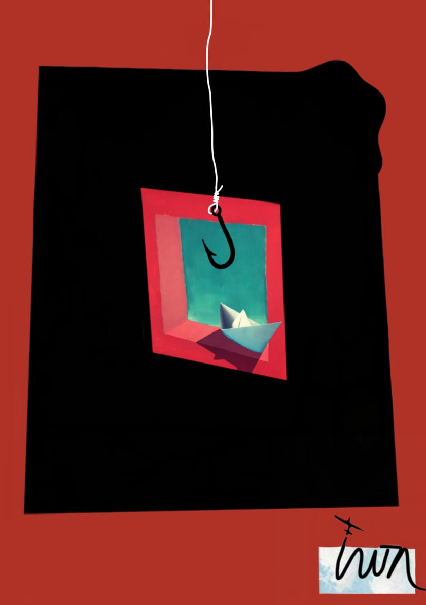
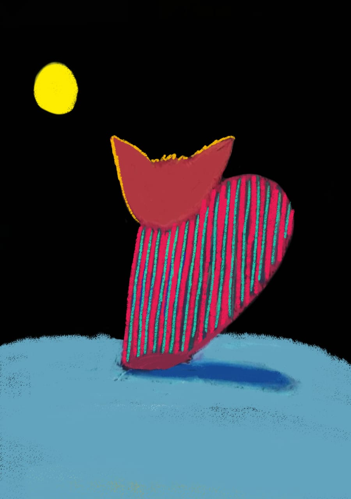

Bienvenidos a Vivero Raíz
Plantas para llenar de vida tus espacios. Conocé nuestras variedades y encontrá la que mejor se adapte a tu hogar.
Explorar el catálogoPlantas destacadas
Algunas de las plantas que podés encontrar en nuestro vivero:



Sobre nosotros
En Vivero Raíz nos gusta ayudar a cada persona a encontrar una planta para su espacio y aprender a cuidarla.
Visitános en Ruta 25 km 4,5, Escobar, Buenos Aires.
¿Tenés alguna consulta?
Escribinos y te ayudamos a elegir o cuidar tus plantas.
Contactarnos